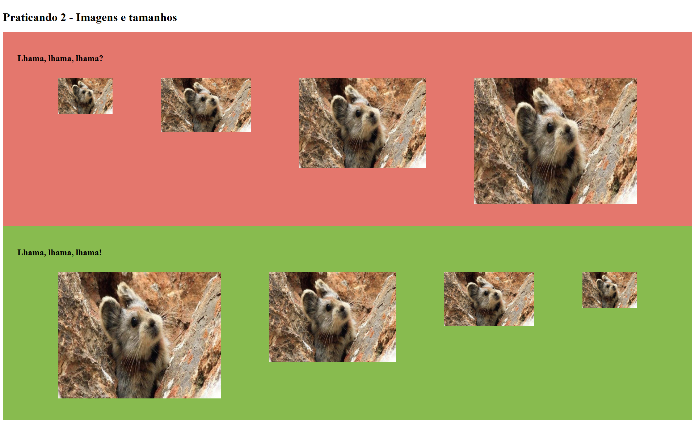
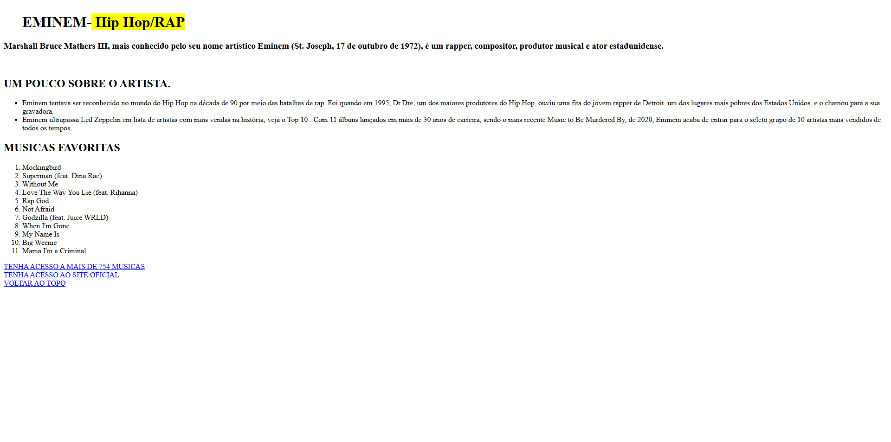

Meus projetos
meu primeiro projeto com css
o objetivo da atividade, era fazer uma pagina em html e css usando imagens em png com uma serie ou filme favorito.

aprendendo repetição
Este projeto aprendi a repetir imagens de diferentes direções

aprendendo a colocar limk
nesse projeto eu aprendi a colocar link, e foi sobre um cantor favorito e musicas mais ouvidas por mim